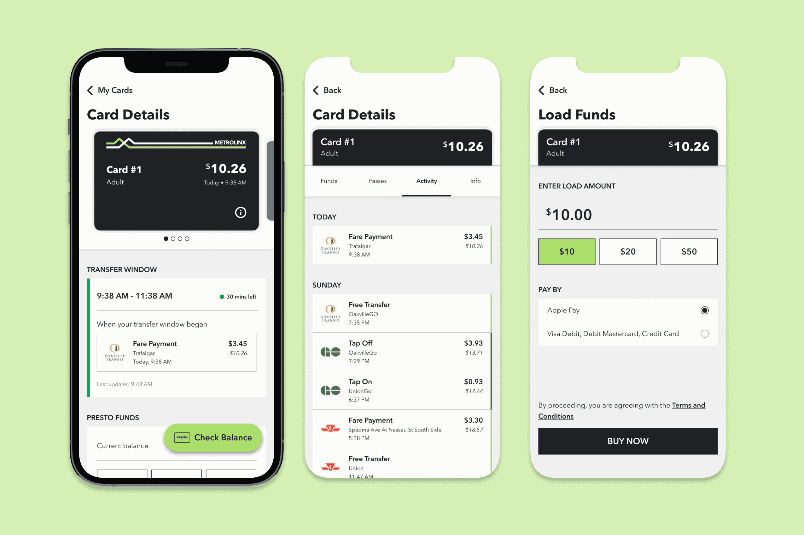
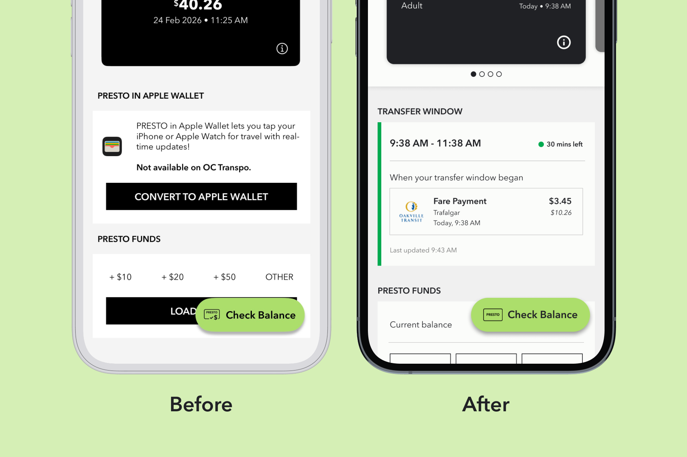
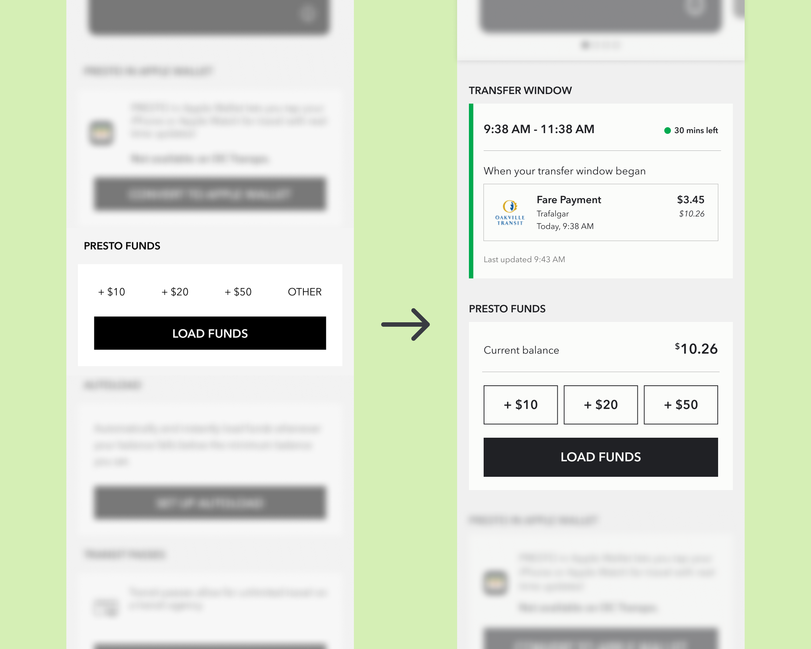
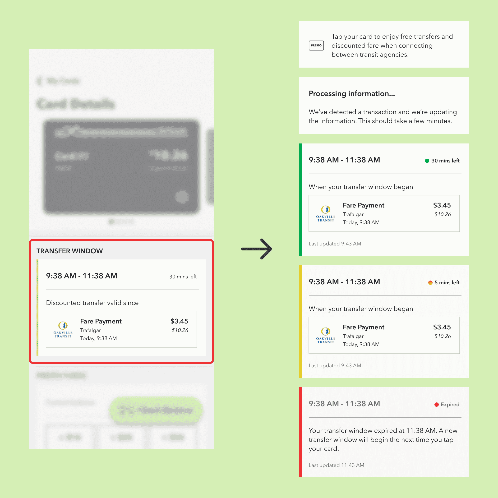
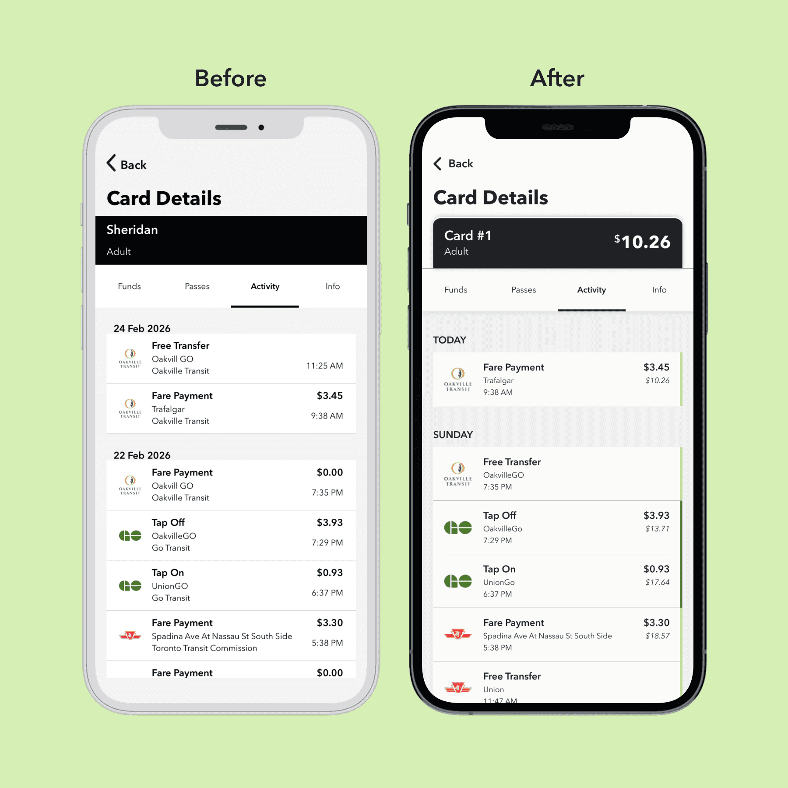
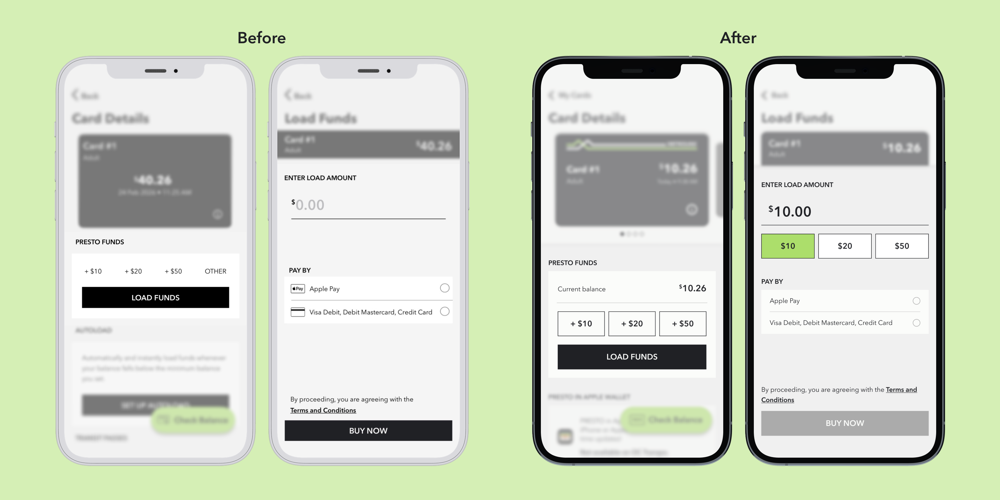
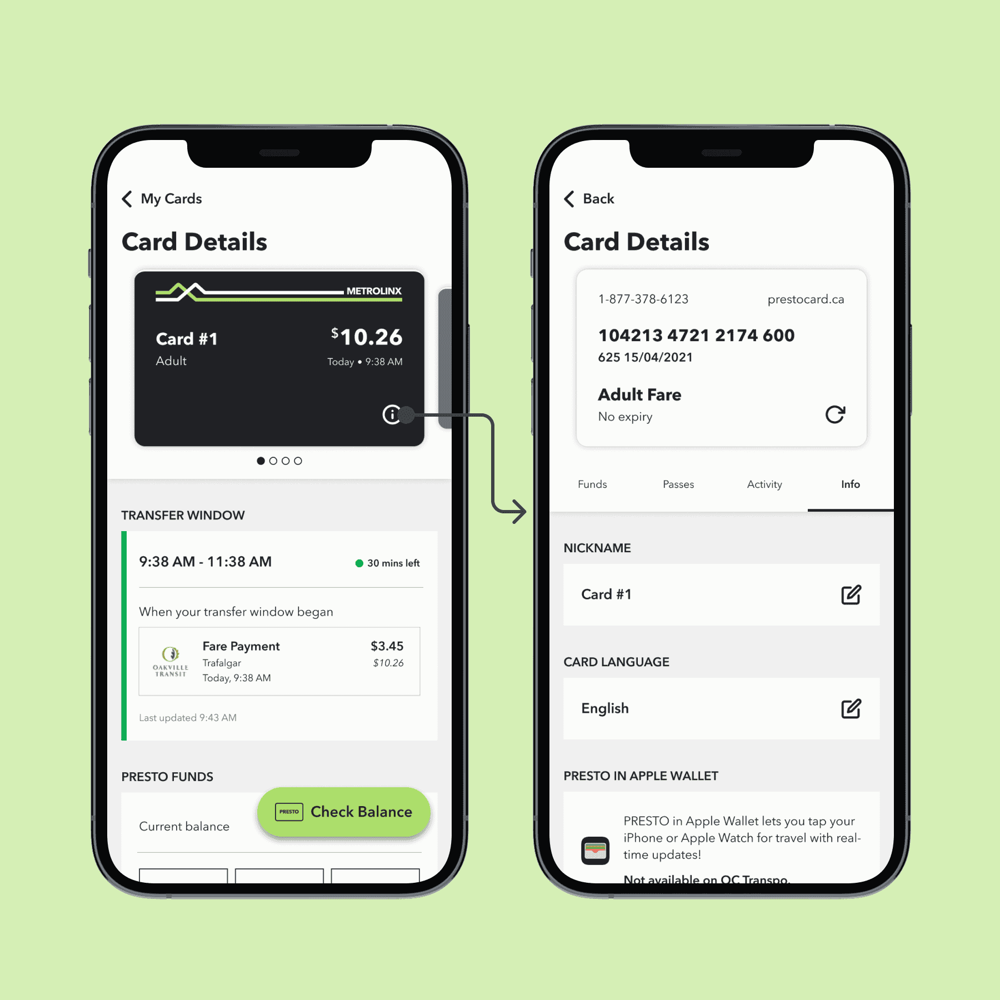

Improving a commuter's experience with the PRESTO app
Overview
This is a quick personal project to kill two birds with one stone: fixing some of my personal gripes with the PRESTO app and exploring how AI can play a role in the design workflow. I focused on redesigning the UI to solve 3 main pain points I have with the current experience around transactions, and explored how AI can be used to test designs and transition wireframes into code.
Role
UX/UI Designer, independent project
Tools
Figma, Claude
Duration
Mar 2026 (1 week)
Heads-up!
Although I've put this project in the "Case studies" section, this will be more of a showcase of a personal project that went from problem definition straight to high-fidelity design. The pain points I'm solving are from my own experience as a PRESTO user, and there isn't much direct user research.
I also came across Elle Ong's case study that touched on one of the problems I'm addressing, and her redesigns inspired some of the visual aspects of and an interaction in my designs.
The ground rules for this project
Keep it simple
I've identified 3 pain points, this project will primarily focus on those pain points.
Work within the existing system
I'm not redesigning the entire app or interactions that users have gotten used to. My ideas should fit into the current system and how it's working.
AI for testing, not designing
I aimed to try using AI to test my ideas and accelerate their implementation, not generating ideas.
The pain points we're looking at
1. Not being able to track the free transfer window
Many commuters, especially students, rely on this transfer window to save money. This information is available (somewhere) on the app but not apparent.
2. Not seeing the balance at the time of a transaction
If the user wants to double check the math, they'd have to go online to see what their balance was at the time of a transaction.
3. Not having preset amounts in the "Load Funds" screen
Once the user taps on "Load Funds", they no longer see the preset amounts of "$10", "$20", "$50" anymore.
Problem #1
The free and discounted transfer window is not easily accessible for PRESTO users. Many commuters, especially students, rely on the free transfer and discounted fare to save money.
In over 4 years of using PRESTO, this is the first time I learned that the app actually shows you the transfer window—and that seems to be a universal experience. Instead, what I usually do is look for the transaction that should've initiate the transfer window, if it's updated promptly.
Users often check for this information on-the-go. It should be available right when they view a card's details. Something simple that shows discounted transfer window would have sufficed. In addition to adding this window, I moved the "Presto Funds" section up so users can access it faster.

I also moved the "Presto Funds" section up so users can access it faster. Users can now quickly see their transfer window and top-up funds if needed.

I used Claude to stress test my wireframes against all the edge cases it could identify.
Many of the edge cases Claude identified can be addressed by designing the different states of this element. While I didn't plan on designing the states at first, addressing the issues Claude identified improved the overall design. An edge case involving the use of colour pushed me to run everything through a vision simulator to improve contrast for users with colour blindness.

Problem #2
PRESTO users who have doubts that the numbers aren't adding up correctly have to go to the website and log in to see the balance at the time of each transaction.
Machines can malfunction from time to time. While commuters who want to double check the math might not do the calculations right then and there, just having the numbers for them to reference adds transparency and builds trust.
To stay consistent with the website's UI, I added a small balance underneath the amount paid. I also removed the name of the transit agencies since that information is already communicated through the logo. After stress testing with Claude, I added a green line to visually connect "Tap On" and "Tap Off" transactions that are parts of the same trip.

Problem #3
Once the user passes the preset top-up amounts and taps on "Load Funds", the app assumes they won't change their mind about not loading a preset amount.
Adding these presets to the "Load Funds" screen doesn't take up much space, and it'll increase the convenience. This is also more consistent with the flow on the PRESTO website.

Visual Design
There's a missed opportunity to make the experience feels more like users are handling actual physical cards.
I drew inspirations from the Apple Wallet's UI. Having the PRESTO cards stacked is a bit more challenging due to their dark colours, but adding the white and green lines that are on physcial cards creates a good separation.
Slide between the UI for Presto cards as of March 2026 and my redesign.
After reading Elle Ong's case study, I was inspired to create my take on the "flip" effect: showing the regular information on the front of the card, and the card flipping to reveal the card number and verification number on its back. Flipping the card also brings the user to the information tab.

Coding the interactions with Claude
I prompted Claude to recreate the carousel design and flip effect with HTML, CSS, and JS. This is what Claude ended up with after 30 minutes, with some of my adjustments afterwards.
This is interactive, try it out!
What's next?
Conduct user testing
This project was made for me as a user and stress tested with AI. It's ready to be opened up and tested by a wider range of users.
Create a consistent system
I didn't have the chance to properly document the typography, spacing, and colour usage. This will make future explorations and iterations easier.
AI for micro-interactions
I want to turn my Figma prototype into a coded one to push explorations of micro-interactions as far as I can.
Reflection
"Use AI to think with you"
That's the most common advice I've heard in terms of working with AI. Throughout this project, it has proven to be beneficial as an additional designer, not something to do everything for me. It wasn't news to me that Claude can be terrifyingly impressive, but I'm still impressed whenever I see how fast it works. Human oversight is important, but Claude can save a lot of time.
More purposeful use of AI tools
Coming from an art background and having learned only 10% of the negative impacts the rapid development of AI has had on people and the environment, AI is still not going to be a go-to tool. I do see the usefulness and the need for AI fluency to keep up with industry changes. However, at least until the physical infrastructure has caught up, I want to keep my own use of AI to instances where it's absolutely useful and/or necessary.